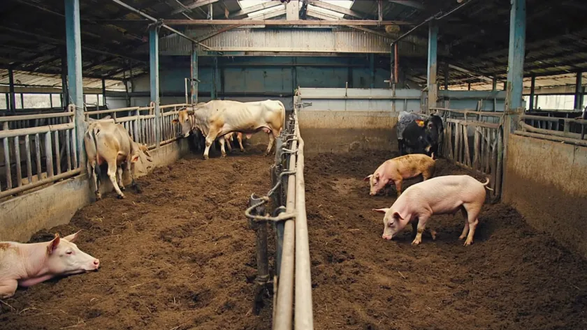

英国・ケンブリッジシャー／2024年／自治体の発表
けがをした家畜に、体を休める敷き材が足りなかった
病気やけがをした家畜に、横になって休むための敷き材が十分に用意されていなかった。獣医師に診てもらう手配も遅れていた。
英国ケンブリッジシャーの町マーチで、牛と豚を飼っていた農場の記録だ。飼育場所には動物を傷つける危険があり、与えられていた餌は、牛や豚に必要な栄養を満たしていなかった。行政の職員は何度も農場に足を運び、獣医師も飼育者に助言した。それでも動物に必要な世話は行き届かなかった。2024年4月、飼育者は裁判所で16件の違反を認めた。

編集者向けの事実確認メモ
「病気やけがをした家畜に、横になって休むための敷き材が十分に用意されていなかった。」
ケンブリッジシャー州議会の発表（2024年4月16日）。本文第3段落が繰り返しの訪問と助言、第4段落が敷き材と獣医師への相談の遅れ。 原資料を開く
当局は病気やけがをした動物の種類・頭数を個別に示していない。